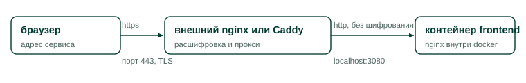

TLS и обратный прокси¶
Эта страница описывает, как поставить перед сервисом внешний прокси с HTTPS. Она нужна администратору, который выводит Peter View на доменное имя площадки.
Сам стек TLS не терминирует. Nginx внутри контейнера frontend слушает восьмой порт и отдает голый HTTP. Задачей внешнего прокси на хосте является терминация TLS. Разделение сознательное: сертификат, получение сертификата по ACME и заголовок HSTS живут у администратора площадки, а не у приложения.
Эталонная схема¶
На схеме показан путь запроса от браузера до контейнера.

Внешний прокси принимает соединение по HTTPS на порту 443, расшифровывает его и
передает запрос на порт 3080 localhost, где опубликован nginx контейнера
frontend. Порт 3080 берут из переменной PROOFREADER_PORT, описанной на
странице Переменные окружения.
Пример конфигурации для внешнего nginx¶
Ниже приведен рабочий файл для внешнего nginx. Разбор обязательных строк следует за листингом.
server {
listen 443 ssl;
http2 on;
server_name peterview.example.ru;
ssl_certificate /etc/letsencrypt/live/peterview.example.ru/fullchain.pem;
ssl_certificate_key /etc/letsencrypt/live/peterview.example.ru/privkey.pem;
client_max_body_size 60m; # запас над 50m у внутреннего nginx
location / {
proxy_pass http://127.0.0.1:3080;
proxy_http_version 1.1;
proxy_set_header Host $host;
proxy_set_header X-Real-IP $remote_addr;
proxy_set_header X-Forwarded-For $proxy_add_x_forwarded_for;
proxy_set_header X-Forwarded-Proto $scheme;
# SSE: стрим прогресса проверки не должен буферизоваться
proxy_buffering off;
proxy_read_timeout 900s;
}
}
server {
listen 80;
server_name peterview.example.ru;
return 301 https://$host$request_uri;
}
Четыре настройки в этом файле нельзя пропустить.
- Отключение буферизации ответа (
proxy_buffering off) обязательно. Иначе стрим прогресса проверки на пути/api/jobs/*/streamперестает быть потоковым: браузер висит без новостей, а потом получает все сразу. Внутренний nginx буферизацию для этого пути выключает сам, но внешний обязан сделать то же, иначе настройка внутреннего бессмысленна. - Тайм-аут чтения ставят не короче 600 секунд, поскольку длинная проверка
моделью живет до 900 секунд (переменная
LLM_JOB_TIMEOUT). Внутренний nginx уже ждет 600 секунд на чтение и отправку, листинг выше поднимает внешнюю планку до 900. - Ограничение размера тела запроса (
client_max_body_size) берут выше 50 МиБ, которые разрешает внутренний nginx. Иначе DOCX предельного размера отсекается внешним прокси с кодом 413 раньше, чем его увидит приложение. - Заголовок
Hostобязателен к корректному пробросу (строкаproxy_set_header Host $host). Приложение сверяет происхождение запроса с заголовкомHost, как описано на странице Механизмы защиты. ИскаженныйHostприводит к ложным отказам с кодом 403 и сообщением «Перекрёстный запрос отклонён». ЗаголовкиX-Real-IP,X-Forwarded-ForиX-Forwarded-Protoприложение не читает, но они нужны для корректных логов и для будущих доработок.
Второй блок server нужен для редиректа с HTTP на HTTPS. Заголовок HSTS сюда не
включен: его добавляют на странице Жесткая настройка для публичного хоста.
Что изменить в конфигурации приложения после включения TLS¶
После появления HTTPS на внешнем прокси обязательны два действия.
- Установите
PROOFREADER_COOKIE_SECURE=trueв.envи перезапустите стек. Сессионная cookie получит флагSecureи перестанет уходить по HTTP. - Если часть пользователей заходит с другого origin, например с домена-алиаса,
добавьте этот origin в
PROOFREADER_CORS_ORIGINSчерез запятую. Развертывание в пределах одного origin ничего добавлять не требует.
Пример для Caddy¶
Конфигурация Caddy короче, потому что часть настроек там включена по умолчанию.
peterview.example.ru {
reverse_proxy 127.0.0.1:3080
flush_interval -1
}
Caddy самостоятельно получает сертификат Let's Encrypt, редиректит HTTP на HTTPS
и пробрасывает Host. Значение flush_interval -1 отключает буферизацию
ответа и нужно для того же стрима прогресса.
Ошибки, которые ломают защиту¶
Три варианта настройки вредны и встречаются в практике.
- Не публикуйте наружу порты backend (8000) и languagetool (8010). Стек
спроектирован так, что единственным входом является порт nginx контейнера
frontend. Публикация backend ломает предпосылку проверки происхождения
запроса, поскольку приложение сравнивает
Hostи ничего не знает о вашем прокси, а публикация languagetool выводит проверяющий сервис в интернет. - Не включайте мост корпоративного прокси (
172.17.0.1:3128) на хосте с белым адресом. Так вы получите открытый прокси в интернете. - Не запускайте приложение на базовом порту с публикацией
80:80«временно», без прокси. Тогда у запросов нет заголовкаX-Real-IP, проверка происхождения сверяет origin с голым хостом, а cookie уходит по HTTP.
Проверка результата¶
После настройки прокси убедитесь в четырех вещах.
- Запрос к
http://домен/отвечает редиректом 301 наhttps://. - Страница входа открывается по HTTPS, а в DevTools у cookie PVSESSION стоит флаг Secure.
- Отправьте длинный текст на проверку моделью и убедитесь, что карточки воркеров появляются постепенно, а не пачкой в конце (признак работы SSE без буферизации).
- Выполните вход и сохранение настроек (не-GET запрос) и убедитесь, что ответа 403 с сообщением «Перекрёстный запрос отклонён» нет.
Связанные разделы¶
Страницы, продолжающие тему сетевой настройки.
- Стек контейнеров описывает конфигурацию внутреннего nginx и карту его location.
- Переменные окружения содержит
PROOFREADER_COOKIE_SECUREиPROOFREADER_CORS_ORIGINS. - Жесткая настройка для публичного хоста добавляет к этой странице HSTS, брандмауэр и минимизацию поверхности атаки.
- Механизмы защиты объясняет, как устроена проверка происхождения запроса, о которой здесь идет речь.